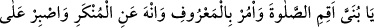
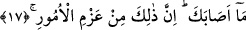

işâret etmektedir. “Bir hardal tanesi ağırlığında bile olsa ve bu, bir kayanın içinde”
yâni yokluk kayasının içinde “veya” sûret ve mânâda “göklerde yahut” sûret ve
mânâda “yerin derinliklerinde bulunsa, yine de Allah onu” saâdet ve şakâvet
sebeplerinden kendisi için takdir ve taksim ettiği kimse için “getirir.” Dilerse bunu
kulun kesbi yoluyla yapar. Dilerse onun husûlü için kulun hesaba katmadığı bir yerden
bir çıkış yolu var eder. “Doğrusu Allah”, kullarına “sonsuz lütûfkârdır,”
rubûbiyyetinin lütfu ile taksim ettiği şeyin onlara ulaştığından “haberdardır.” Şu halde
düşen, kendisi için takdir edilen şey hakkında Allâh’ın vaadine güvenmek, O’nun
keremine dayanmak ve kulluğunu yerine getirmeye koşmaktır.”
Kitapların birinde şöyle geçer: “Bu âyette geçen sözler, Lokman (a.s.)’ın son olarak
söylediği sözlerdir. Bu sözün heybetinden ödü patlamış ve ölmüştür.”
Fakîr (Bursevî) der ki: Heybet makamındaki bu huzur, mukarreb kulların
sıfatlarındandır. İbrahim (a.s.) namaz kıldığı zaman göğsünün kaynama sesi duyulurdu.
Bu durum, heybet hâlinin onu tamâmen istilâ etmesinden dolayıdır. Bu kaynamaya
“sadrın bürhânı” denilir. Bu hal, Efendimiz (s.a.)’de ekmeliyyet mertebesinde
gerçekleşmiştir. Bizim gibilerin durumu ise şaşkınlık vericidir. Nasıl olmasın ki; ne
yapılan öğütler gönlümüze tesir etmekte, ne de lafızların mânâları kalbimize
işlemektedir. Bu ise gaflet, nisyan ve isyanın çokluğundan kaynaklanmaktadır.
Lokman’ın rütbesini, derecesini elde etmeden,
Heybet ateşi canı yakmaz, cana tesir etmez.
Âşık kimsenin canı pervane gibidir;
Nerede bir mum varsa, onda yanar kül olur.
Lokman (a.s.)’ın öğütlerinden birisi de Keşfü’l-esrâr’da aktarılan şu sözleridir:
“Lokman oğluna öğüt verdi ve şöyle nasihat etti: Ey oğul! Düğünlere çok gitme, çünkü
sende dünyâya karşı bir rağbet oluşur ve böylelikle kalbinde âhiret unutulur.”
Yine şöyle söyledi: “Ey oğul! Âhiret saâdetini istersen ve dünyâda zühdü talep
edersen, cenâzelerin teşyîine katıl ve ölümü gözünün önünde tut. Dünyâda insanlara yük
olma. Dünyâdan kifâyet miktarı rızık al, fazlasını bırak. Elinden geldiğince kadınların ar
ve namuslarından sakın. Kötü kadınlardan Allâh’a sığın, çünkü onlar şeytanın tuzağı ve
fitnenin sebebidir.”
17. Yavrucuğum! Namazı kıl, iyiliği emret, kötülükten vazgeçirmeye çalış, başına